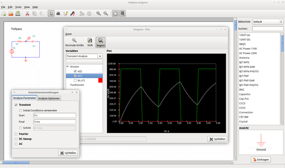

Oregano
Dieser Artikel wurde für die folgenden Ubuntu-Versionen getestet:
Ubuntu 16.04 Xenial Xerus
Zum Verständnis dieses Artikels sind folgende Seiten hilfreich:
 Oregano ist ein einfach gehaltenes EDA (Electronic Design Automation) Programm, mit dem man grafisch Schaltpläne einer elektrischen Schaltung erzeugen kann. Anschließend kann eine Netzliste erzeugt werden, die als Simulationsgrundlage für ngspice oder Gnucap dienen kann. Darüber hinaus kann man die mit Oregano erzeugten Schaltpläne ausdrucken oder in den Formaten PDF, PNG, PostScript (PS) oder SVG exportieren.
Oregano ist ein einfach gehaltenes EDA (Electronic Design Automation) Programm, mit dem man grafisch Schaltpläne einer elektrischen Schaltung erzeugen kann. Anschließend kann eine Netzliste erzeugt werden, die als Simulationsgrundlage für ngspice oder Gnucap dienen kann. Darüber hinaus kann man die mit Oregano erzeugten Schaltpläne ausdrucken oder in den Formaten PDF, PNG, PostScript (PS) oder SVG exportieren.
Oregano befindet sich noch in der Entwicklung und sollte daher mit Bedacht verwendet werden. Häufiges Speichern beugt Datenverlust vor. Ebenso ist die Lokalisierung des Programms bei weitem nicht abgeschlossen. Vorteile zieht Oregano eher aus seinem einfachen Aufbau, wodurch die Grundlagen bei der Simulation mit SPICE leicht erlernt werden können.
Installation¶
Hinweis:
Die Simulation mit Gnucap scheint momentan nicht korrekt zu funktionieren, da Oregano scheinbar ungültige Gnucap-Netzlisten erzeugt. Umgehen kann man dieses Problem, indem man stattdessen ngspice verwendet. Dafür installiert man zuerst ngspice über die Paketverwaltung und wählt anschließend in Oregano unter "Edit -> Preferences -> Engines" ngspice aus.
Zur Installation [1] von Oregano werden aufgrund dieses Problems folgende Pakete benötigt:
oregano (universe)
ngspice (multiverse)
 mit apturl
mit apturl
Paketliste zum Kopieren:
sudo apt-get install oregano ngspice
sudo aptitude install oregano ngspice
Verwendung¶
Einstellungen¶
Einstellungen, die den Editor und die Verwendung der Simulationsengine (ngspice oder Gnucap) betreffen, findet man unter "Edit -> Preferences". Die Einstellung der Simulationsart findet man unter "Edit --> Simulation Settings". Folgende Simulationsarten stehen dabei zur Auswahl:
| Simulationsarten | |
| Art | Beschreibung |
| Transient | Das zeitliche Verhalten einer Schaltung simulieren |
| Fourier | Mittels einer Fourieranalyse das Frequenzspektrum berechnen |
| DC Sweep | Das Verhalten einer Schaltung in Abhängigkeit eines oder mehrerer Parameter (z.B. Spannung einer Quelle) berechnen |
| AC | Das Frequenzverhalten einer Schaltung simulieren |
Darüber hinaus lassen sich auch weitere Analyseoptionen setzen, z.B. die Umgebungstemperatur.
Erzeugen oder Anzeigen einer Netzliste¶
Über "View -> Netlist" kann man sich die Netzliste zur aktuellen Schaltung ansehen, diese ist aber unabhängig von den Einstellungen immer eine Gnucap Netzliste, siehe Problembehebung.
Über "Tools -> Generate netlist" lässt sich hingegen die Netzliste der aktuellen Schaltung in eine Datei speichern, abhängig von der gewählten Engine (Gnucap oder ngspice).

Simulation¶
Bevor man über "Tools -> Simulate" (oder F5 ) simulieren kann, muss man eine korrekte Schaltung aufbauen, d.h. der Baustein "GND" sowie mindestens eine Spannungsklemme (voltage clamp) müssen gesetzt sein.
Hat man eine korrekte Schaltung aufgebaut, kann man die Simulation starten und links über "Knoten" oder "Funktionen" verschiedene Spannungen auf dem Graphen anzeigen lassen. Darüber hinaus kann man wählen, welche Simulationsart man anzeigen möchte. Um Funktionen hinzuzufügen, muss man auf "Datei -> Funktion hinzufügen" klicken und eine entsprechende Operation auswählen.
Problembehebung¶
Netzliste wird immer für Gnucap erzeugt¶
Wenn man sich unter "View -> Netlist" die Netzliste der aktuellen Schaltung ansieht, wird unabhängig von den Einstellungen (Engineauswahl) immer eine Netzliste für Gnucap erzeugt. Möchte man die SPICE Netzliste sehen (vorausgesetzt die Engine ist auf ngspice gesetzt), kann man über "Tools -> Generate netlist" die Netzliste in einer Datei speichern. Diese Datei kann nun mit einem beliebigen Texteditor geöffnet werden [2].
Die Simulation bleibt leer¶
Sollten in der Simulation keine Möglichkeiten zum Anzeigen eines Graphen vorhanden sein, sollte man überprüfen, ob man Gnucap verwendet und in diesem Fall auf ngspice wechseln, indem man unter "Edit -> Preferences -> Engines" ngspice auswählt. Anderenfalls sollte man die manuelle Simulation über ngspice in Betracht ziehen.
Beim Simulieren stürzt Oregano ab¶
Sollte Oregano bei der Simulation abstürzen, kann man (nachdem man seine Schaltung erzeugt hat) eine SPICE Netzliste erzeugen und diese in ngspice selbst simulieren. Hierzu muss in Oregano unter "Edit -> Preferences -> Engines -> ngspice" ausgewählt sein. Wie ngspice verwendet wird, kann man im zugehörigen Wikiartikel nachlesen: ngspice.
 oder
oder  Übersicht zu zahlreichen Programmen
Übersicht zu zahlreichen Programmen- Erstellt mit Inyoka
-
 2004 – 2017 ubuntuusers.de • Einige Rechte vorbehalten
2004 – 2017 ubuntuusers.de • Einige Rechte vorbehalten
Lizenz • Kontakt • Datenschutz • Impressum • Serverstatus -
Serverhousing gespendet von